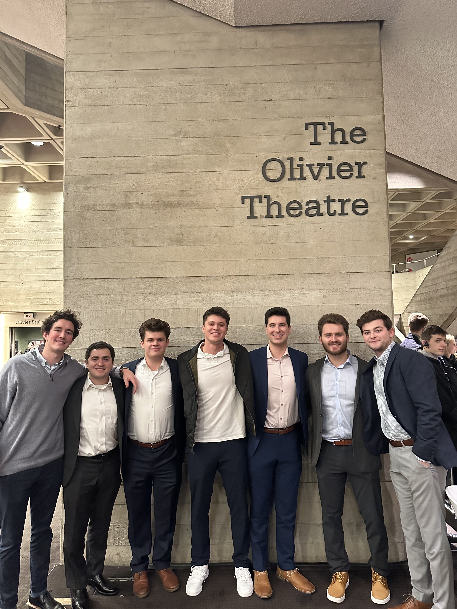

About Me:
Hello! My name is Patrick Sheehy and I am currently a 4th-year student at the University of Iowa. I am originally from Clive, Iowa, a suburb of Des Moines. I am 22 years old and will be graduating this coming May! After I graduate I will move back to Des Moines and work for EY as a Technology Risk Consultant. In my free time I love to play guitar and sing in a band, play golf and hang out with friends. I am also very into music, but my favorite typer far and away is country music!
My top listened to Artists on Spotify (2022):
- Morgan Wallen
- HARDY
- Luke Combs
- John Mayer
- Jon Pardi
My family and I love to watch the show Impractical Jokes, which is a show where four lifelong friends compete to embarass each other by making each other perform foolish acts in public. In the table below, I displayed each of our lists of our favorite four characters in order:
| Pat | Nate | Mom | Dad |
| 1. Murr | 1. Joe | 1. Sal | 1. Joe |
| 2. Joe | 2. Murr | 2. Murr | 2. Sal |
| 3. Sal | 3. Q | 3. Joe | 3. Murr |
| 4. Q | 4. Sal | 4. Q | 4. Q |
This Past Winter:
Over this past winter break, I had the awesome opportunity to study abroad in London. It was a 2 week, 3 s.h. program that I did with 6 of my good friends. I took a class called Topics in Finance, where we learned about international finance and how it is similar/different to US finance. We had plenty of opportunities to go see different sites around the city, and we had so much fun while we were there! The picture displayed below is from when we went to see the musical "Hex" as a class:
